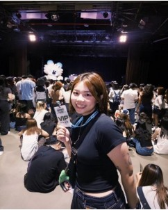
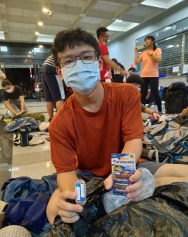
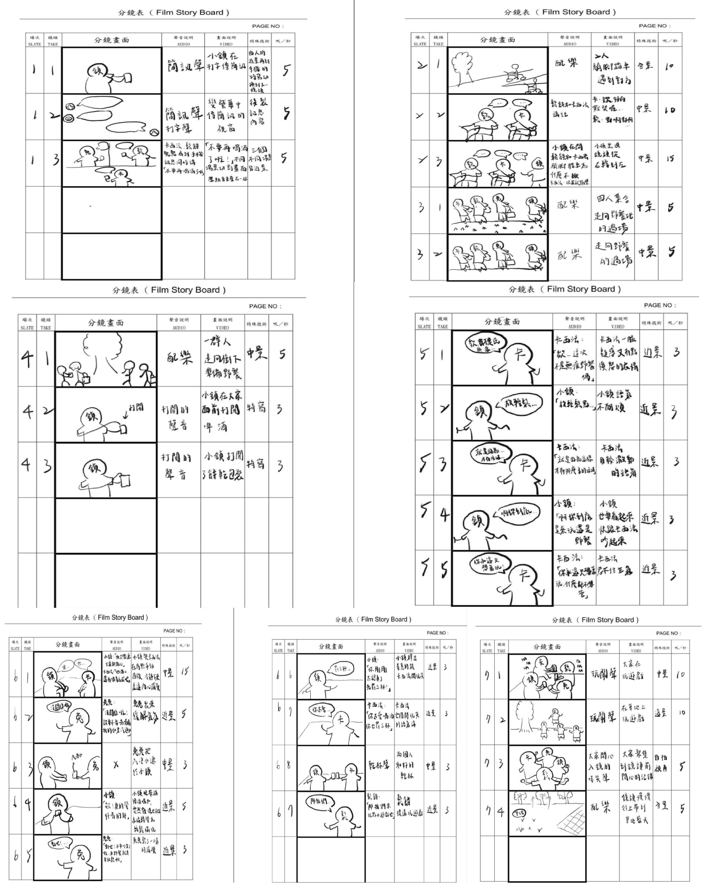

一、專案執行摘要
在當前多數聚會仍仰賴酒精與一次性用品的社交文化中，我們希望打造一種兼顧健康、永續與自在交流的新聚會型態。 本專案以「無酒精永續野餐」為主軸，結合 sober party 與無痕野餐理念，引導參與者透過自備環保餐具、使用在地食材與健康無酒精飲品實踐低碳生活。
根據行政院環保署統計，台灣每年使用超過 40 億個一次性餐具與飲料容器。同時全球年輕世代（Gen Z）中有超過 60% 開始實踐「有意識消費（mindful consumption）」。 我們以「永續行動 × 健康社交」作為差異化切入點，提供市場上較少見的低壓力、可實踐、且具理念深度的參與形式。
活動主題：甲五 Sober Picnic 無痕野餐。
核心口號：無痕野餐，無酒也歡。
二、企劃核心與參觀重點
值得留意的三個核心特色
- 無酒精清醒社交：以無酒精氣泡水、鮮果茶取代酒精，營造真誠、安全且沒有乾杯壓力的交流氛圍。
- 無痕低碳實踐：鼓勵自備環保餐具與容器，選用在地食材，顯著降低活動碳足跡與浪費。
- 自然場域療癒：於綠意盎然的戶外草地舉辦，結合音樂與輕社交，提供情緒放鬆的療癒空間。
建議活動參與順序
- 騎乘單車或搭乘大眾運輸抵達草地公園，實踐低碳交通。
- 鋪開重複使用的野餐墊，擺放自備的環保餐具與餐盒。
- 開瓶享用手作無酒精水果氣泡水，感受清新氣泡口感。
- 參與草地飛盤與輕音樂互動，在清醒狀態下拍照記錄美好時光。
三、現況與競品分析表
| 活動名稱 | 活動形式 | 核心吸引力 | 社交門檻 |
|---|---|---|---|
| Sober Picnic (我們) | 野餐體驗 + 無酒精吧 + 遊戲互動 | 無酒精清醒文化 + 無痕永續生活融入 | 低壓力（無飲酒負擔，互動輕鬆） |
| 草悟系市集 | 主題市集 + 攤位 + 音樂展演 | 都市綠生活、夜市與選物混合型態 | 中等（較依賴店家營造購物氛圍） |
| 審計新村市集 | 文創手作 + 二手選物 + 工作坊 | 文創品牌孵化、特色手作體驗 | 中等（偏消費導向社交） |
| 台中文創園區 | 環保主題 + 展覽 + 講座體驗 | 藝術展覽、環境教育議題 | 較高（偏靜態學習與展覽） |
四、SWOT 與 SO 策略矩陣
Strengths (優勢)
1. 無酒精派對帶帶來清醒、真誠且安全的社交氛圍。
2. 融入減塑與低碳設計，切合 ESG 與永續精神。
3. 戶外自然場域有效釋放都市壓力。
Weaknesses (劣勢)
1. 初期資金與行銷資源有限，需進行市場教育。
2. 大眾對「無酒精派對」的概念尚在建立階段。
Opportunities (機會)
1. 政府積極推廣 SDGs 與 ESG 政策補助。
2. Z 世代健康意識抬頭，無酒精飲品市場年增 7% 以上。
3. 體驗經濟與高社群分享意願。
Threats (威脅)
1. 戶外場地申請、噪音與安檢法規嚴格。
2. 綠色永續餐具與設備初期投入成本較高。
SO 策略：結合 S1 無酒精社交與 O2/O5 健康意識，打造低壓、理性的新派對模式；結合 S2 低碳環保與 O1/O6 政府補助與社群擴散，極大化品牌永續形象。
五、Z 世代 Persona 目標客群
本企劃鎖定 13-28 歲 Z 世代族群，他們具備高度永續敏感度，且渴望無壓力的真實社交。

蔡欣儒 (25歲 / 公司行政)
個性：自律、有邊界感、健康控
痛點：聚會常被逼問「怎麼不喝酒？」，感到社交壓力。
動機：期待安心舒服的戶外無酒精野餐。
林鈺涵 (18歲 / 大學生)
個性：慢熟型、觀察細膩、自備餐具
痛點：學生活動多以玩樂為主，缺乏有質感的社交。
動機：尋找不用假裝社交、能做自己的質感圈子。

吳濬丞 (23歲 / 超商店員)
個性：外向健談、活力派、戶外愛好者
痛點：多數聚會過度仰賴酒精炒氣氛。
動機：想開懷大玩又不需要硬喝的團康派對。
六、十字定位矩陣分析
我們以「環保永續性」為縱軸、「社交性」為橫軸進行十字定位：
🌱 甲五 Sober Picnic 位於右上象限：高永續 × 高社交
精準切中 Z 世代「想放鬆社交，但不想喝酒、不想不合群」的真實心聲。提供兼具理念深度與生活感的健康社交新模式。
七、故事大綱與廣告劇本
廣告標語：無痕野餐，無酒也歡
一群朋友在群組相約週末騎單車野餐。原本擔心會充斥酒精與垃圾，然而到了現場，大家手提環保袋與可重用餐具。 當打開瓶蓋時，發現不是酒而是清爽的水果氣泡水！大家開心地玩飛盤、拍照自拍，在夕陽下共享健康自然的時光。

八、甲五團隊與組員心得
蔡欣妘（組長 / 行銷二甲）
第一次擔任組長學到了很多行程安排與溝通技巧，謝謝甲五大家一起完成影展！
呂品依 & 林子淇（企劃組）
挑戰企劃職位收穫滿滿，不斷吸收新觀點，很高興能一起做出不留遺憾的作品。
洪婷鈺（編劇）
體會到故事的力量，看到文字劇本轉化為實際畫面讓人非常感動！
劉欣潓（導演攝影）
初次嘗試導演角色與分鏡修改，感受團隊團結一致呈現最佳模樣的力量。
錢奕靜（美術）
負責封面與視覺設計雖然緊張，但最終順利完成並學到了許多視覺美感細節！
高銘鴻（音樂剪輯）
背負整個團隊的心血進行最後收尾剪輯，雖然有壓力但讓剪輯技術更上一層樓，甲五缺一不可！
林恩駿（劇務）
體會到劇務的不可或缺，頂著大太陽完成拍攝，感謝每一位夥伴的辛勤付出。
九、資料來源與參考文獻
- 行政院環境保護署資源循環署 (2024)：一次性餐具與容器使用統計。
- GlobalData (2024): Mindful Consumption Trends in Asia-Pacific.
- Drinkaware (2025): Youth Drinking Trends & Non-Alcoholic Choices.
- PubMed (2021): Non-drinkers' experiences of social situations involving alcohol.